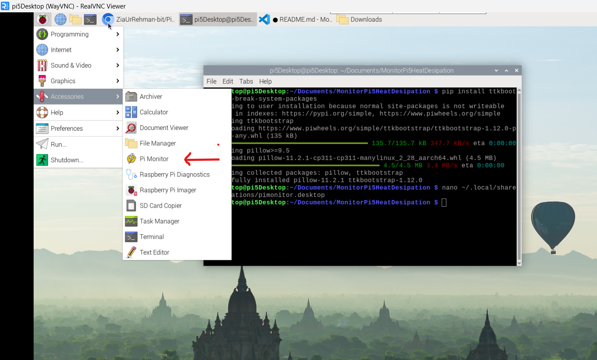
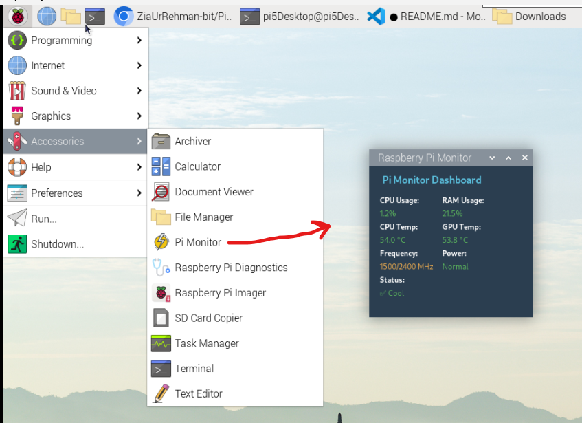

A lightweight desktop dashboard built with Python and ttkbootstrap that displays
live CPU & RAM usage, temperatures, clock frequency, and power throttling status — refreshed every second.
Polls psutil.cpu_percent() every second. Color-coded: green (<50%), amber (50–75%), red (>75%).
Reads psutil.virtual_memory().percent in real-time with the same three-tier color status system.
Reads directly from /sys/class/thermal/thermal_zone0/temp — no extra tools required.
Uses vcgencmd measure_temp to fetch the VideoCore GPU temperature specific to Raspberry Pi hardware.
Shows current / max frequency in MHz via psutil.cpu_freq() — useful for detecting throttling.
Decodes vcgencmd get_throttled hex flags to report: Under-voltage, Freq capped, Throttled, Temp limit, or Normal.
Summarises overall health: ✅ Cool (<60°C), 🟡 Warm (60–70°C), 🟠 Hot (70–80°C), 🔴 Throttling (>80°C).
Supports a .desktop file to add Pi Monitor to the application menu — launches like a native system utility.


| Metric | Source | Normal | Warning | Critical |
|---|---|---|---|---|
| CPU Usage | psutil.cpu_percent() |
< 50% | 50 – 75% | > 75% |
| RAM Usage | psutil.virtual_memory() |
< 50% | 50 – 75% | > 75% |
| CPU Temp | /sys/class/thermal/thermal_zone0/temp |
< 60 °C | 60 – 70 °C | > 70 °C |
| GPU Temp | vcgencmd measure_temp |
< 60 °C | 60 – 70 °C | > 70 °C |
| Frequency | psutil.cpu_freq() |
Displayed as current / max MHz · amber colour | ||
| Power Status | vcgencmd get_throttled |
Normal (0x0) | Freq capped / Under-voltage | Throttled / Temp limit |
Python 3 is pre-installed on Raspberry Pi OS. Install the required packages:
pip install psutil ttkbootstrap
Download the project from GitHub:
git clone https://github.com/ZiaUrRehman-bit/Raspberry-Pi-5-Power-Monitor cd Raspberry-Pi-5-Power-Monitor
Launch the GUI with a single command:
python GUI3.py
Create a .desktop entry to access Pi Monitor from the Accessories menu like a native app:
[Desktop Entry] Type=Application Name=Pi Monitor Exec=python3 /home/pi/your_folder/GUI3.py Icon=/home/pi/your_folder/icon.png Terminal=false Categories=Utility;
Replace /home/pi/your_folder/ with your actual path.
The entire dashboard is a single Python file — GUI3.py — built with Tkinter + ttkbootstrap for the UI and psutil + vcgencmd for system metrics. The root.after(1000, ...) loop ensures live 1-second updates.
import psutil, os import ttkbootstrap as tb from ttkbootstrap.constants import * def get_cpu_temperature(): with open("/sys/class/thermal/thermal_zone0/temp") as f: return round(int(f.read()) / 1000.0, 2) def get_gpu_temperature(): out = os.popen("vcgencmd measure_temp").readline() return float(out.replace("temp=","").replace("'C ","")) def decode_throttled(hex_str): flags = int(hex_str.split('=')[-1], 16) reasons = [] if flags & 0x1: reasons.append("Under-voltage") if flags & 0x4: reasons.append("Throttled") if flags & 0x8: reasons.append("Temp limit") return ", ".join(reasons) if reasons else "Normal" def get_temp_status(temp): if temp < 60: return "✅ Cool" elif temp < 70: return "🟡 Warm" elif temp < 80: return "🟠 Hot" else: return "🔴 Throttling" class SystemMonitorGUI: def __init__(self, root): self.root = root self.root.title("Raspberry Pi Monitor") self.root.geometry("260x240") self.style = tb.Style("superhero") # dark theme self.frame = tb.Frame(root, padding=10) self.frame.pack(fill=BOTH, expand=YES) # ... build labels for each metric ... self.update_data() def update_data(self): cpu = psutil.cpu_percent() ram = psutil.virtual_memory().percent ct = get_cpu_temperature() gt = get_gpu_temperature() freq = psutil.cpu_freq() pwr = decode_throttled(os.popen("vcgencmd get_throttled").read()) # update all labels with colour styles... self.root.after(1000, self.update_data) # refresh every 1 s if __name__ == "__main__": root = tb.Window(themename="superhero") SystemMonitorGUI(root) root.mainloop()
Zia Ur Rehman — PhD Researcher at the University of Limerick, Ireland (Lero, BDS Group).
This project was built as part of research into energy-efficient AI and hardware monitoring on edge devices.
The Raspberry Pi 5 Power Monitor is also available as a PyPI library — EnergyEfficientAI —
for real-time CPU, memory, and power analysis during ML model training.
Research interests include Federated Learning, Explainable AI, Green AI, Evolutionary Algorithms, and parallel computing on distributed hardware.